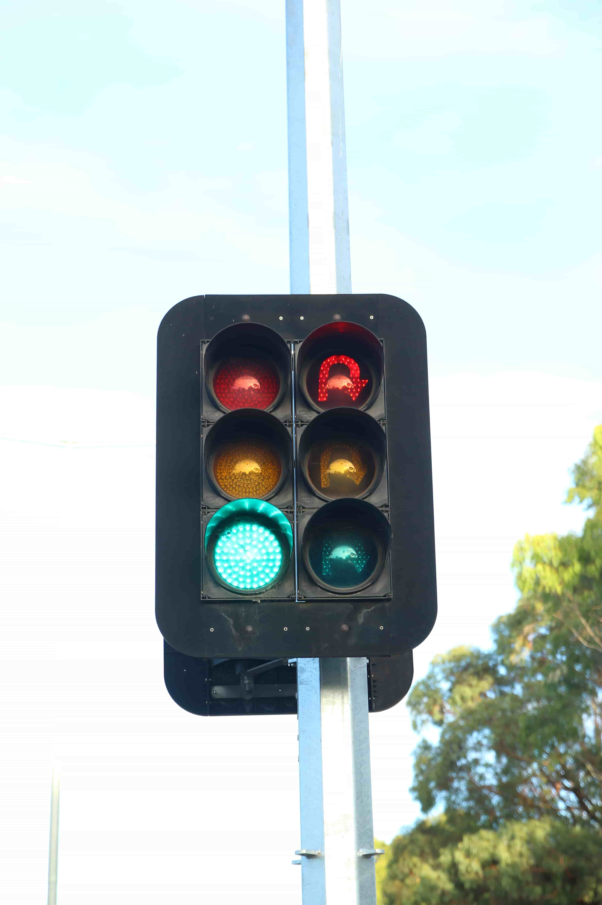

A common version of Aldridge LED light, made in 8" & 12" variations, although 12" lights are not used in Victoria. These have ATS branding on the front and back.
All lights of this version use cutaway/scoop visors exclusively.
These lights are very uncommon, and have a very high density of LEDs compared to other lights.
The lenses are also very clear compared to other revisions.
These lights' LED density is identical to Aldridge's revision 2 of clear LEDs.
| Ball signal, U-Turn signal | Arrow signal |
|---|---|
|  | |
| Capital Ave/High Street Rd, Glen Waverley, VIC. The green ball in picture 1 has been replaced with a ATG LED module. Interestingly, the U-Turn signal is just a ball signal, with U-Turn stencils fitted inside. |
|
A different LED pattern compared to other revisions - I have not been able to find a full light with this design.
| Only the red module in both of these lights have this odd pattern - Not a radial pattern like other revisions; instead more of a grid. Green and yellow are just normal ATS modules. |
|
{kind=link}
{kind=link}
{kind=link}
{kind=link}
{kind=link}
{kind=link}
{kind=link}
{kind=link}
{kind=link}